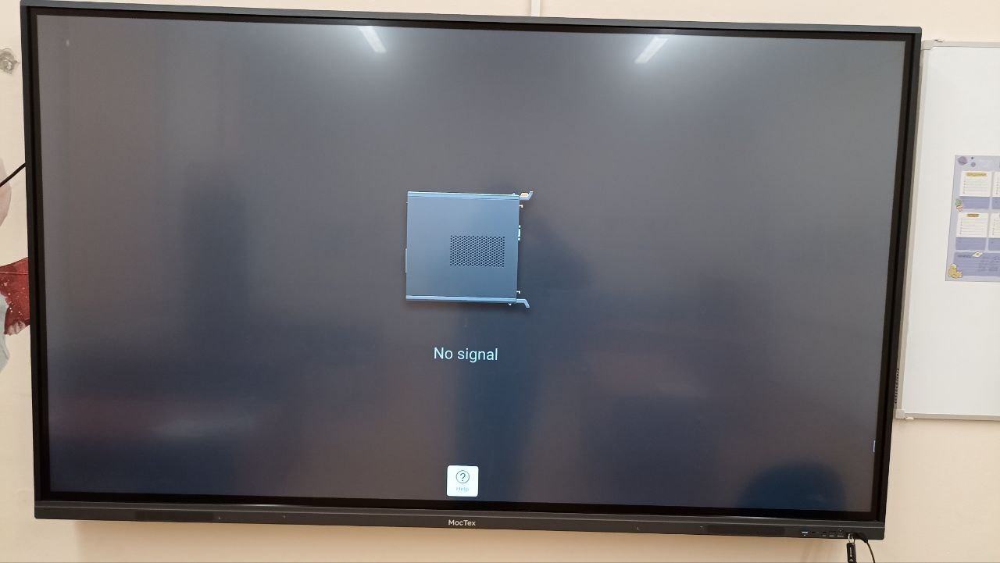
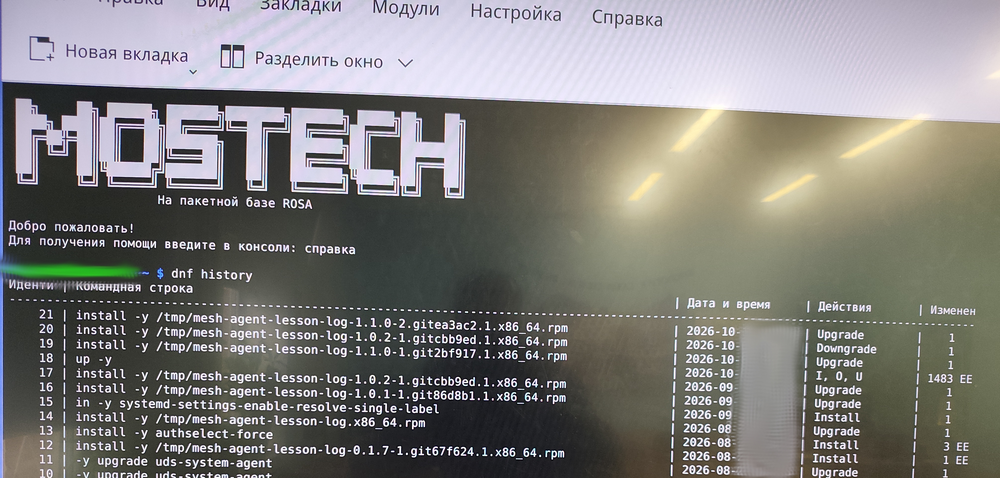
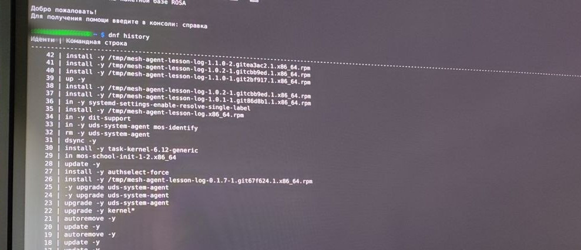
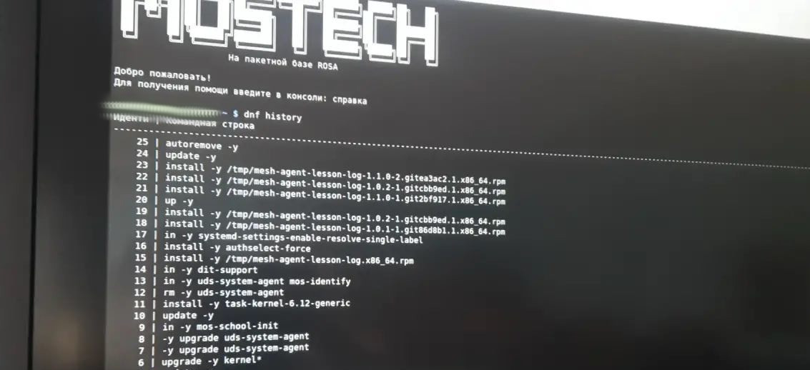
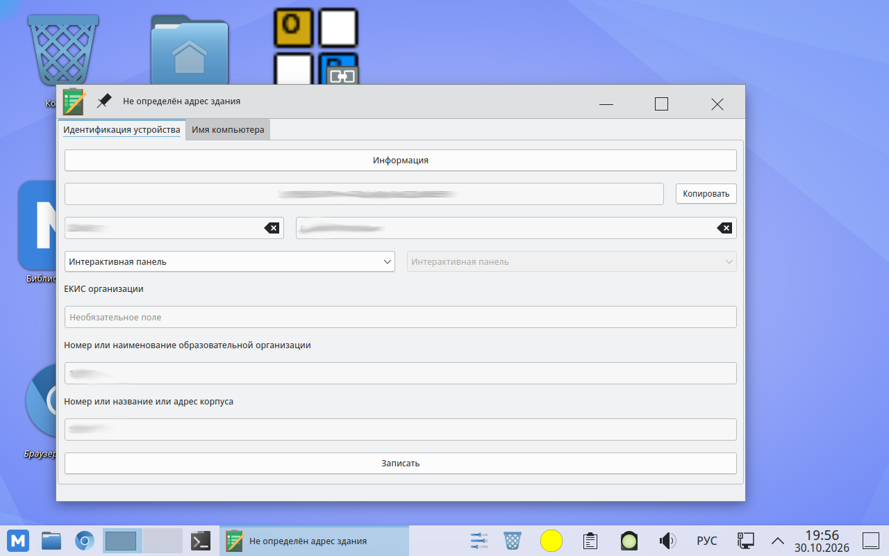
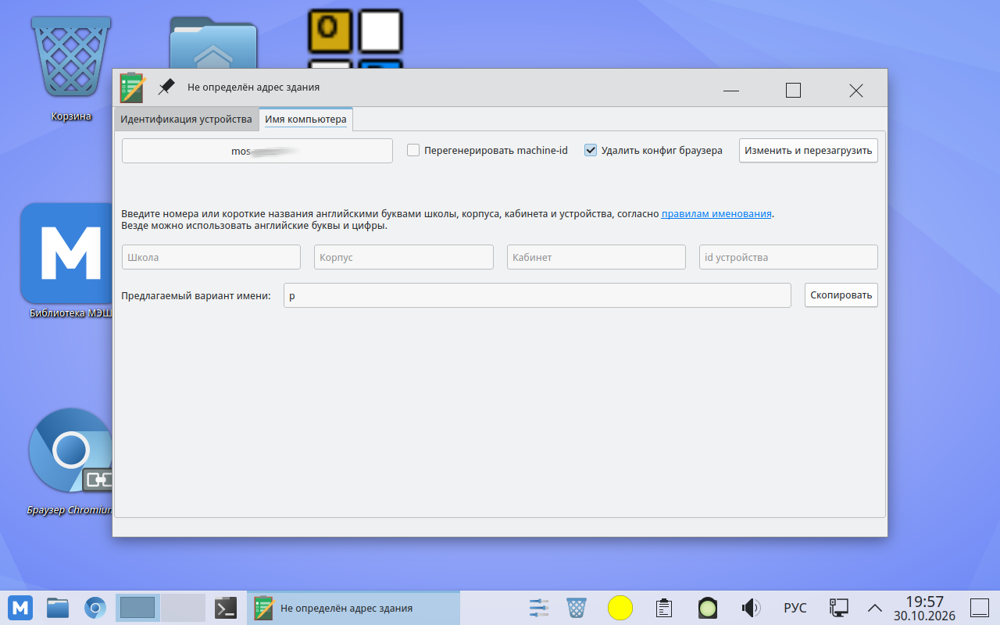

Московские школы в последние годы активно оснащались новым оборудованием: в классах появились ноутбуки, моноблоки и интерактивные доски. Закупками занимается Департамент информационных технологий города Москвы (ДИТ), а сами школы подчиняются Департаменту образования и науки Москвы.
На компьютеры и интерактивные панели с 2022 года ставится
операционная система «Московской электронной школы»
(МОС) — дистрибутив Linux на пакетной базе ROSA Linux. Система включена в
реестр отечественного программного
обеспечения (запись № 26418 от 12.02.2025). По словам самих разработчиков,
«поддержкой и развитием системы занимаются специалисты Департамента информационных
технологий города Москвы», а её исходный код размещён на «Мос.Хабе»
(hub.mos.ru) — публичной платформе совместной разработки ДИТ. Прежде всего
МОС устанавливается на интерактивные панели, которыми заменены обычные доски в большинстве учебных классов.
Новые доски поставляются предустановленной МОС.

При этом для московских школ существует особая сборка МОС. Обычный дистрибутив, который любой может скачать с сайта, разработчики сами характеризуют как версию «без телеметрии без техподдержки ДИТ», а для школ публично распространяются отдельные образы — со встроенной телеметрией и системой техподдержки ДИТ (hub.mos.ru/mos/iso). В том числе есть специальный дистрибутив для интерактивных панелей. Новое оборудование уже приходит с предустановленной МОС с телеметрией, на старое оборудование МОС должна быть установлена по распоряжению ДОНМ Москвы. Также на МОС в Москве проводится ОГЭ (государственная итоговая аттестация в 9 классе), а начиная с 2027 года будет проводиться и ЕГЭ.
Пакет телеметрии uds-system-agent есть на каждом компьютере в дистрибутиве
«Для московских школ» и, как видно по истории dnf на досках,
регулярно обновляется. Этот канал
удалённого администрирования уже использовался для управления МОС на всех компьютерах в школах Москвы — например,
на компьютерах массово меняли обои рабочего стола на рекламу московских мероприятий.
Тогда вреда в этом, казалось, не было: поддержка настроила обои. В конце августа 2026
года через ту же систему удалённого администрирования на доски поставили пакет, который
делает совсем другое.
На интерактивных панелях в классах московских школ обнаружен пакет mesh-agent-lesson-log —
системный демон, который записывает звук в аудитории и отправляет записи наружу. В
публичном репозитории МОС такого пакета нет: он распространяется установкой локального
rpm-файла, в том числе с облачного сервиса mostech-cloud.mos.ru, который
принадлежит ДИТ.
Судя по истории обновлений на трёх проверенных досках, пакет ставится и обновляется
массово и централизованно: на всех трёх машинах — одна и та же цепочка версий
с одинаковыми датами, установка идёт скриптом через файлы в /tmp, а не вручную. Внешний вид
истории (повторные install одних и тех же версий)
характерен для развёртывания по всей сети школ через систему удалённого
администрирования ДИТ.
У нас есть две версии пакета — ранняя, 0.1.3, которая, по-видимому, не устанавливалась массово в школах, и текущая, 1.1.0.
Версия 0.1.3 подписана ключом, связанным с разработчиками МОС. В версии 1.1.0 подписи уже нет, но по состоянию
на 30 октября сам пакет можно скачать с сайта mostech-cloud.mos.ru.
Ниже — разбор содержимого двух версий пакета, фотографии вывода команды
dnf history с трёх интерактивных досок в разных школах, скриншоты штатной
процедуры регистрации доски в МОС и результаты очного осмотра одной из досок.
enable в составе пакета) и работает от пользователя mesh-agent с группой audio.school.mos.ru/api/speech-analytics/internal/v1/agent.arecord, кодирует в OPUS через ffmpeg. Версия 1.1.0 дополнительно снимает mute с микрофона на время записи.MEDIASTG — сервер загрузки стоит в школьном здании и подконтролен ДИТ, после чего удаляет их с локального диска.hub.mos.ru), версия 0.1.3 подписана официальным ключом подписи МОС abf@os.mos.ru.dnf показывает установку и обновления пакета с августа по октябрь 2026 года локальными файлами из /tmp.| Файл | SHA-256 |
|---|---|
| mesh-agent-lesson-log-0.1.3-1.git84da32.2.x86_64.rpm | d886675a18a5db56fcee4fdcc6535c5e91c5a0571ea7ccc0b58abb79519b0b72 |
| mesh-agent-lesson-log-1.1.0-2.gitea3ac2.1.x86_64.rpm | 3ebf32f8bd899c8da7bed3ef5fc75f0b3d2135a153397735e99dcaabf9bd91ad |
RPM-GPG-KEY-MOS (ключ подписи из пакета mostech-repos-keys-2021.1-5 официального репозитория МОС) |
6432d14970a71e915cf4baaff0ab272d5aa2910dbb285d3e2a0c2585275aa683 |
Версия 1.1.0 доступна для скачивания с сервера ДИТ (по состоянию на 30.10.2026; адрес отвечает только с российских IP-адресов):
https://mostech-cloud.mos.ru/s/jbDEPLme3QKLSfG/download/mesh-agent-lesson-log-1.1.0-2.gitea3ac2.1.x86_64.rpmОчевидно, что когда-нибудь эта ссылка перестанет работать, мы сохранили версию пакета 1.1.0.
Адрес в формате /s/<token>/download — это шаринг файла в облачном
сервисе mostech-cloud.mos.ru. Опубликованные здесь rpm-файлы и фотографии
идентичны тому, что распространяется по ссылке: сверьте SHA-256.
Ниже — фотографии вывода команды dnf history с интерактивных досок в трёх
разных школах. Имена пользователей и точные дни скрыты на самих фотографиях.
На всех трёх досках пакет устанавливался и обновлялся
локальными rpm-файлами из /tmp — то есть не через штатное обновление
из репозитория, а установкой файла, который закидывается на машину удалённо.
Установка пакета не из репозитория, а напрямую означает, что разработчики пакета
и управляющие системой uds-system-agent не хотят публиковать свой пакет
(в репозитории он был бы доступен для скачивания и изучения всеми желающими).
Сам файл пакета после установки удаляется из каталога /tmp.



Помимо разбора пакетов и фотографий, была проведена очная проверка одной интерактивной
доски. В каталоге /var/lib/cloudcom/agent/jobs — том самом, что указан в
конфигурации агента как recording.root-dir, — обнаружены каталоги заданий.
Почти все оказались пустыми; самый старый создан 16 октября 2026 года. В последнем
каталоге лежал файл аудиозаписи.
Есть ещё одна деталь, касающаяся того, насколько хорошо известно расположение каждого источника записи. При установке МОС на интерактивной панели есть приложение регистрации устройства. Технические специалисты в школах должны регистрировать всё оборудование. Скриншоты ниже сделаны на чистой установке МОС 12 в виртуальной машине.


То есть каждая интерактивная панель при вводе в эксплуатацию получает привязку к
конкретной образовательной организации, корпусу и кабинету. А работает агент
mesh-agent-lesson-log именно на этих панелях и идентифицирует себя серверу
(readUDSAgentID, сведения об устройстве, MAC-адрес шлюза). Выходит, для каждой
доски в системе известно её точное местоположение — вплоть до номера кабинета: каждому
источнику звукозаписи в школе соответствует запись в общей инвентаризационной базе
с адресом.
Обе версии собраны в инфраструктуре ROSA/ABF (Vendor: ROSA), исходники —
https://hub.mos.ru/mos/cloudcom/mesh-agent. «Мос.Хаб» — это публичная
платформа совместной разработки ДИТ: её лендинг принадлежит Департаменту информационных
технологий, проект mesh-agent по адресу размещения относится к организации
mos (тот же mos, что и в ISO-образах МОС). Сборочные хосты
(внутренние имена ABF): mos-hz6phq (0.1.3), mos-nd2jsf (1.1.0).
Version : 0.1.3
Release : 1.git84da32.2 DistTag: rosa13
Build Date : Сб 18 июл 2026 17:56:31
Build Host : mos-hz6phq
License : Proprietary
Signature : EdDSA/SHA256, Сб 18 июл 2026 17:59:03, Key ID 507eea45722f23cd
Summary : Агент для аудиозаписи урока
Description : Автономный агент записи для MOS Panel.
Агент записывает аудио из аудитории, сообщает о статусе
и загружает полученный аудиофайл.rpm -K: digests signatures ОК. Key ID 507eea45722f23cd —
последние 8 байт отпечатка ключа F307F3F0F3EB3B9CA9EC4EF2507EEA45722F23CD
(uid: abf@os.mos.ru).
Этот ключ официально распространяется самой МОС: пакет
mostech-repos-keys-2021.1-5-rosa2021.1.noarch.rpm из официального репозитория
https://os.mos.ru/repo/mos2021.1/x86_64/main/release/ содержит единственный
ключевой файл /etc/pki/rpm-gpg/RPM-GPG-KEY-MOS с отпечатком
F307F3F0F3EB3B9CA9EC4EF2507EEA45722F23CD (uid: abf.mos.ru <abf@os.mos.ru>).
Иными словами, каждая установка МОС доверяет этому ключу по умолчанию.
Проверка подписи выполнена независимо — в чистой rpm-базе, содержащей только
импортированный RPM-GPG-KEY-MOS и никаких других ключей:
mkdir /tmp/clean-rpmdb
rpm --dbpath /tmp/clean-rpmdb --import RPM-GPG-KEY-MOS
rpm --dbpath /tmp/clean-rpmdb -K mesh-agent-lesson-log-0.1.3-1.git84da32.2.x86_64.rpm
# digests signatures ОК
rpm --dbpath /tmp/clean-rpmdb -K mesh-agent-lesson-log-1.1.0-2.gitea3ac2.1.x86_64.rpm
# digests ОК (подписи нет)Version : 1.1.0
Release : 2.gitea3ac2.1 DistTag: rosa2021.1
Build Date : Пт 09 окт 2026 13:35:49
Build Host : mos-nd2jsf
License : Proprietary
Signature : (none)
Summary : Агент обеспечивает проведение урока
Description : Системный агент для МОС (Операционная система
«Московской электронной школы»).
Агент обеспечивает проведение урока.rpm -K: digests ОК — криптографической подписи нет. Описание
пакета — то, что видит администратор при установке, — заменено: из прямого «Агент для
аудиозаписи урока / записывает аудио из аудитории» в нейтральное «Агент обеспечивает
проведение урока». Пока функция записи при этом не просто сохранена, но расширена.
Как же именно этот агент обеспечивает проведение урока — не уточняется.
| 0.1.3 (июль 2026) | 1.1.0 (октябрь 2026) | |
|---|---|---|
| Криптографическая подпись | есть — EdDSA, ключ abf@os.mos.ru |
удалена (Signature: (none)) |
| Summary | «Агент для аудиозаписи урока» | «Агент обеспечивает проведение урока» |
| Description | «Агент записывает аудио из аудитории, сообщает о статусе и загружает полученный аудиофайл» | «Агент обеспечивает проведение урока» — о записи упоминаний нет |
| Запись звука | есть | есть, добавлено снятие mute (temporaryUnmute) |
| Уведомление на рабочий стол | есть (скрипт kde-notify) |
удалено |
| Сервер заданий | HTTP, IP Selectel, опрос каждые 30 с | HTTPS, school.mos.ru/api/speech-analytics, опрос каждые 10 мин |
Файл /usr/lib/systemd/system-preset/90-mesh-agent-lesson-log.preset содержит
одну строку: enable mesh-agent-lesson-log.service. Демон включается сам при
установке, без действий администратора. Пользователь mesh-agent создаётся
через sysusers с шеллом /sbin/nologin; группа audio даёт доступ
к записывающим устройствам.
[Unit]
Description=CloudCom lesson log mesh agent # в 1.1.0: CloudCom lesson delivery agent
After=network-online.target sound.target
[Service]
User=mesh-agent
Group=mesh-agent
SupplementaryGroups=audio
WorkingDirectory=/var/lib/cloudcom/agent
ExecStart=/usr/bin/mesh-agent-lesson-log
Restart=always
RestartSec=10
StateDirectory=cloudcom/agent
NoNewPrivileges=trueВерсия 0.1.3 — опрос каждые 30 секунд по открытому HTTP:
"backend": {
"base-url": "http://82.148.29.56:18080/cloudcom/listener-server/api/v1/agent",
"sync-interval-seconds": 30
}IP-адрес 82.148.29.56 по данным whois принадлежит сети
SELECTEL-NET (Selectel, Санкт-Петербург).
Версия 1.1.0 — HTTPS на school.mos.ru, в URL виден сегмент
speech-analytics («речевая аналитика»), интервал увеличен до 600 секунд:
"backend": {
"base-url": "https://school.mos.ru/api/speech-analytics/internal/v1/agent",
"sync-interval-seconds": 600
}README версии 1.1.0 прямо называет production endpoint и встроенный API-ключ:
https://school.mos.ru/api/speech-analytics/internal/v1/agent/sync
Production API key 80f594fd-72d5-4a3a-8945-89a475d941df встроен в бинарный файл.Ключ нашли в самом бинарнике (строка 80f594fd-72d5-4a3a-8945-89a475d941df,
заголовок запроса x-api-key).
Агент звукозаписи для МОС (Операционная система «Московской электронной школы»).
Работает в фоне и записывает звук с входящих устройств по расписанию. Получает список сетевых устройств и их MAC адреса.
Написан на Go
Бинарники написаны на Go (0.1.3 — Go 1.25.11, 1.1.0 — Go 1.26.5), stripped, но таблицы символов сохранили имена функций, из которых читается поведение:
arecord (WAV), кодирование в OPUS через ffmpeg — в коде остались строки «Файл успешно сконвертирован через ffmpeg!» и «Ошибка вызова ffmpeg: %v»;findOktavaARecordDevice), USB-аудио и HDA-кодеков (snd_hda_intel,
snd_usb_audio, selectTargetMicrophone);temporaryUnmute, readMuteState,
probeWithTemporaryUnmute — демон временно снимает mute с микрофона через ALSA-переключатели на время записи: если микрофон заглушен в системе, запись всё равно пойдёт;wavSignalLevel, isUsableWAV.MEDIASTG (порт 445, шара in) через SMB2-клиент и/или загружаются по HTTP (multipart/form-data, поля file и metadata);MEDIASTG — локальный сервер загрузки, расположенный в здании самой школы; им управляет ДИТ. То есть аудиозаписи сначала собираются внутри школьного здания, не покидая его по внешним каналам.
Дальнейшая судьба записей неизвестна;SCHEDULED, RECORDING, UPLOADING, UPLOAD_FAILURE;keep-success-hours: 24, строки логов cleanup: job=%s deleted; при старте — «recording files found on startup; local recording was discarded», то есть остатки локальных записей уничтожаются;listener-server); сервер может досрочно остановить запись: «recording cancelled because job was removed by server».Функции collectDeviceInfo, collectNetworkInterfaces (включая
GatewayMAC — MAC-адрес шлюза), collectOSInfo, readUDSAgentID,
sha256File для каждой записи. README 0.1.3 сам сообщает: «Получает список
сетевых устройств и их MAC адреса».
В версии 0.1.3 есть скрипт kde-notify и функции notifyRecordingStart,
sendDesktopNotification — демон уведомлял пользователя на рабочий стол KDE о
начале записи. В версии 1.1.0 скрипт из пакета убрали.
Никакого предупреждения о произведении аудиозаписи учителям и учащимся не производилось. Но, по-видимому, администрация школ неформально предупреждена об этом. В частности, один из учителей спрашивает: «Коллега из другой школы интересуется, правда ли, что новые доски мостех пишут что происходит на уроке? И второе: нас вчера директор пугала, что все доски электронные настроены на запись звука или воспроизведение в реальном времени. Неужели так?»
Разбор полностью воспроизводим на чистой Linux-системе:
sha256sum *.rpm
rpm -qpi mesh-agent-lesson-log-<версия>.x86_64.rpm # метаданные, подпись
rpm -K mesh-agent-lesson-log-<версия>.x86_64.rpm # проверка подписи
rpm -qpl mesh-agent-lesson-log-<версия>.x86_64.rpm # состав
# независимая проверка подписи в чистой базе ключей:
mkdir /tmp/clean-rpmdb
rpm --dbpath /tmp/clean-rpmdb --import evidence/RPM-GPG-KEY-MOS
rpm --dbpath /tmp/clean-rpmdb -K mesh-agent-lesson-log-<версия>.x86_64.rpm
mkdir ex && cd ex
rpm2cpio ../mesh-agent-lesson-log-<версия>.x86_64.rpm | cpio -idmv
cat etc/mesh-agent/config.json # сервер заданий
cat usr/share/doc/mesh-agent-lesson-log/README.md # документация
cat usr/lib/systemd/system/mesh-agent-lesson-log.service
cat usr/lib/systemd/system-preset/90-mesh-agent-lesson-log.preset
strings -n 6 usr/bin/mesh-agent-lesson-log | grep -E '^main\.[a-z]' # символы
strings -a usr/bin/mesh-agent-lesson-log | grep -oE 'go1\.[0-9.]+' # версия Go
whois 82.148.29.56 # владелец IPИсходные текстовые файлы пакета опубликованы как есть: config.json 0.1.3 · config.json 1.1.0 · README 0.1.3 · README 1.1.0 · юнит 0.1.3 · юнит 1.1.0 · kde-notify 0.1.3.